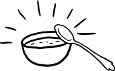

Meşhur hikâyedir; nice meşhur hikâye gibi aslı astarı az biraz meçhul. Kraliçe Eugenie, diyar-ı Osmanlı'ya yaptığı ziyaretten döner dönmez, ahçıbaşını çağırır huzuruna, talimat verir: "Bana aynen İstanbul'da yediğim gibi bir pilav pişiresin!" Arzulanan pilav tez elden kraliçenin önüne konur konmasına da, başka türlü bir pilavdır bu. Ne istenilen kıvamdır bu, ne de aranılan tat. İkinci kez talimat verilir. Bir başka pilav çıkarılır huzura bu sefer. Fakat sonuç değişmez. Kraliçe Eugenie'nin önüne getirilen pilavların hiçbiri Osmanlı sarayında tükettiklerine benzemez. Ahçıbaşı naçar, ne yapsın, elinde tarif var, ne dendiyse harfiyen onu yapıyor. Ne var ki tarif bir parça bulanık. Tercümesi olmayan kelimeler gibi Osmanlı'dan gelen pilav tarifi. Dilden dile geçiş yaparken örselendiği için değil de, "anlayış farklılıkları"ndan geçiş yapamadığı için takılıyor ulusal sınır boylarında. Tarif şöyle:
"Bir kazana, kararınca pirinç, kararınca su, kararınca yağ koyasın, pişiresin." Ahçıbaşı kederli. Şu "kararınca"nın ne olduğunu bir anlayabilse, kalmayacak mesele.
1896 tarihinde, Boston'da, daha sonra tüm ülkede pıtrak gibi çoğalacak yemek kitaplarının öncüsü kabul edilen bir kitap yayımladı Fannie Famer. O zamana kadar "kararınca" diye bir ölçüm birimi kullandığı filan yoktu Amerikalıların, ama gene de kimi belirsizlikler vardı ortada. Famer, "bir tutam", "bir parmak", "kaşık dolusu" gibi envai çeşit yanılsamaya gebe olabilecek ifadeyi ortadan kaldırarak, somut ölçümler getirdi mutfak kültürüne. Artık tariflerde kesinkes ölçümler kullanılacak, pişirme süreleri belirlenecek ve bu sayede, herhangi bir yemeği pişirebilmek için kadınların mutfakta ne kadar zaman harcamak zorunda kalacakları da önceden belirtilecekti. Famer'in öncelikli derdi yemeklerin istenilen sonucu vermesiydi, yiyenlerle uğraştığı söylenemez. Ama takip eden yüzyıl ibreyi tersine döndürdü. Yemek ile beraber yiyen de büyüteç altına alındı. 1900'lerin ikinci yarısında günbegün ivme kazanan "diyet salgını", "sağlıklı yaşam ideolojisi", beraberinde kendi kesinlik tutkusunu da getirdi. Artık "kararınca" yerine kesin ölçümler kullanmakla yetinilmeyecek; daha da öteye gidip, kalori-karbonhidrat-yağ-tuz ve gıdım hesapları da yapılacaktı.
ABD'de ve giderek tüm dünyada toplumsal yaşamın McDonaldlaşmakta olduğuna dikkatleri çeken Ritzer'in de altını çizdiği gibi, yemek kültüründe gözlemlenen bu kesinlik tutkusu, ilk bakışta zannedildiği gibi masum ya da yüzeysel olmadı hiçbir zaman. Her şeyi ayrıntılı ve kati birimlerle ölçme eğilimi, evlerden lokantalar zincirine, sağlıklı yaşam mönülerinden fast-foodlara değin her alana sirayet etmekte gecikmedi. Kesinliğin yanı sıra ikinci bir unsur olarak "hız" eklendi özel ve kamusal alandaki mutfaklara. Pişirildikten on dakika sonra tüketilecek biçimde hazırlanıyor McDonalds hamburgerleri, patatesler için bu süre yedi dakika olarak belirlenmiş durumda. En kısa zamanda, maksimum boyutlarda üretilen, gene en kısa zamanda, maksimum boyutlarda tüketilmeli sistemin içsel talepleri uyarınca. Fordist üretim modelleri ile dünyanın herhangi bir şehrinde, önünde yemek kitabı, mutfağında kendi halinde yemek pişiren ev hanımı arasında nice geçişlilikler var, ilk bakışta bu denli ilgisiz görünseler de.
Kesinlik ve hızın yanı sıra, yemek kültüründeki üçüncü yeni unsur büyüklük saplantısı. Tüm yiyeceklerin birer dev boyutu var, bir de dev ötesi. Termos boyutunda bardaklarda kahve, ismi "Balina" olan balık köfteleri, aşırı büyük hamburgerlerin aşırı büyütülmüş fotoğrafları. Bütün imgeler, ne denli az paraya, ne kadar büyük boyutlarda yiyecek alabilirseniz, kendinizi o derece şanslı hissetmeniz için. Kesinlik, hız ve büyüklük tutkusunun aksamadan işleyebilmesi için dördüncü bir unsur daha gerekli: hafızasızlık. Her gün aynı hamburgeri yediğinizi unutabilesiniz ki, yeniden ve yeniden gelmeniz mümkün olsun. Marketlerden aslında hep aynı şeyleri farklı görüntüler altında alıp durduğunuzu fark etmek, tüketim seviyenizi düşürebilir istenilenin altına. Toplumsal hafıza kaybı, yemek kültürünün olmazsa olmaz bir uzantısı.
Meşhur hikâyedir; nice meşhur hikâye gibi aslı astarı az biraz meçhul. Ama uzun uğraşlardan sonra, nihayet kararınca bir pilav konduğunda önüne, bu sefer de yanında gelen hoşafta bir eksiklik saptar Kraliçe Eugenie. Tıpkı pilav gibi, hoşaf da defalarca gider gelir, yeniden yapılır her seferinde başarısız addedilmek üzere. Neyin eksik olduğu sorulduğunda, "Yaldızı eksik" diye cevap verir kraliçe. Bilmez ki İstanbul'da yediği hoşafın üzerinde yüzen o esrarengiz yaldız, Osmanlı sarayındaki ahçının önce pilava daldırdığı kepçeyi, üzerinde pilavın yağıyla birlikte hoşafa daldırmasından kaynaklanmıştır.
Kesin ölçümler hayli geç girdi gündelik yaşamımıza. Debeleniyoruz hâlâ, kapitalizmin kendi motoruna yetişmek, modernite kulvarındaki geç kalmışlığımızı telafi etmek ile "kararınca" kendi yağımızda kavrulmak arasında. Ama bugün artık, Terry Eagleton'ın da dediği gibi, tam da kendi içine kapanmamayı başarmakta bütün mesele. Eşdeyişle, "köktencilik" ile "kozmopolitlik" arasında tercih yapabilmekte. Kullanımı hayli şaibeli olan "köktencilik/köktendincilik" kelimesi, Eagleton'ın çizdiği çerçevede herhangi bir din ya da coğrafyayla özdeşleştirilmeden kullanılıyor. "Kendi benzerleriyle yaşama, kendine benzemeyeni yanında yaşatmama eğilimi" olarak. Bu açıdan bakıldığında, Doğu'dan ve Batı'dan, farklı sınıflardan, dinlerden, etnisitelerden bolca alıcısı var köktenciliğin. Kendi yağımızda kavrulmak, başkalarına kapılarını kapatmak demek; velhasıl, bize benzemeyeni yanımızda istememek. İçine doğduğun özelliklerden ötürü ayrıcalıklı, özel, üstün olduğuna inanmak. Sessiz ve sinsi ve daimi savaş çığırtkanlığı.
Kozmopolitlik ise, en zoru. McDonaldlaşmış yekpare bir dünyaya değil sadece, kendi içine kapanmaya da karşı çıkmak. Ne yutup aynılaştıran bir evrenselcilik, ne de bloklar halinde ayıran milliyetçilik. Mesele hoşafın yaldızı. O yaldızın ne denli "özel" olduğundan bizleri ancak bir yabancının haberdar ettiğini, ne öğrenirsek bize benzemeyenlerden öğrenebileceğimizi teslim etmek.
Michigan